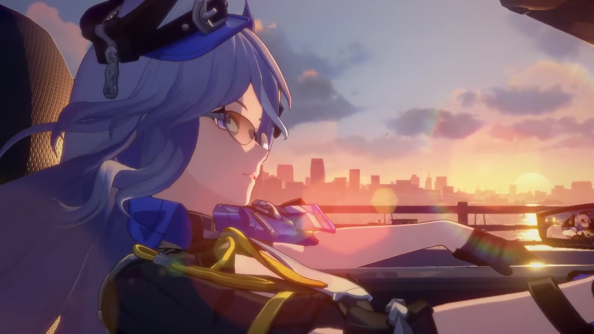

Ananta sort le 15 janvier 2027
La date de sortie mondiale a été annoncée lors de la Gamescom Opening Night Live. Une bande-annonce a accompagné l'annonce.
Lire la sourceSuis la sortie du jeu, découvre Nova City et Chongxiao, puis retrouve d'autres fans sur notre Discord.
Sortie mondiale d'Ananta dans
Sortie le 15 janvier 2027.
Les annonces importantes, reformulées en clair. Chaque carte renvoie vers sa source.
La date de sortie mondiale a été annoncée lors de la Gamescom Opening Night Live. Une bande-annonce a accompagné l'annonce.
Lire la sourceLa bande-annonce de la date de sortie présente Chongxiao. D'après la presse, la ville s'inspire notamment de Hangzhou.
Lire la sourceD'après l'annonce officielle, plus de 17 millions de joueurs se sont préinscrits dans plus de 110 pays et régions. Ce chiffre a été donné le jour de l'annonce de la date.
Lire la sourceUn RPG d'action en monde ouvert urbain. Voici les six points à connaître.

Une métropole moderne et animée, entre Tokyo et Los Angeles.
La seconde ville, avec Lingyun City : lacs et architecture traditionnelle.

Des affrontements en temps réel, basés sur les arts martiaux.

Escalade, véhicules et planeur pour traverser la ville.
Des phénomènes surnaturels menacent la ville. La NCCA enquête.
PC (client officiel et Steam), PS5, iOS et Android.
La bande-annonce doublée en français présente l'ambiance urbaine d'Ananta. Lance la lecture quand tu veux.
Vidéo : bande-annonce d'Ananta, propriété de ses ayants droit. Elle est affichée ici à titre de fan.
Notre serveur Discord réunit les fans francophones d'Ananta. L'ambiance est conviviale, active et passionnée.

Ananta sort dans le monde entier le 15 janvier 2027. La date a été annoncée le 25 août 2026 lors de la Gamescom Opening Night Live.
Le jeu sort sur PC (client officiel et Steam), PS5, iOS et Android.
Oui, Ananta est un jeu free-to-play. D'après la presse, sa monétisation serait orientée cosmétiques, sans gacha de personnages.
Deux villes sont annoncées : Nova City et Chongxiao, avec Lingyun City. Nova City est une métropole animée. Chongxiao est plus calme, avec des lacs et une architecture traditionnelle.
Clique sur « Rejoindre le Discord ». Le lien d'invitation est permanent et gratuit. Le serveur compte plus de 100 membres.
Non. anantafr est un site de fans non officiel, non affilié aux éditeurs d'Ananta ni à Discord Inc.
Plus de 100 membres discutent, s'entraident et partagent leurs créations. Entre sur le serveur.